Diseño de Bre-B para los 5 bancos del Grupo Aval
El reto
Bre-B es la solución de transferencias inmediatas del Banco de la República. El reto era diseñar e integrar este flujo de forma nativa en las apps de los 5 bancos del Grupo Aval — Banco de Bogotá, Banco Popular, Banco AV Villas, Banco de Occidente y Dale! — garantizando una experiencia consistente para millones de usuarios, cumpliendo la regulación y adaptándose a las guías visuales de cada marca.
Qué hicimos
Llegué al proyecto en la etapa de diseño y producción. Mi trabajo abarcó todo el ciclo desde la investigación hasta el acompañamiento en desarrollo:
- Benchmark de referentes internacionales y análisis de patrones existentes en las apps del Grupo Aval
- Participación en sesiones de discovery con usuarios
- Análisis profundo de la regulación del Banco de la República y sesiones con Redeban
- Diseño del flujo completo y sus variantes para web y app, adaptado a las guías de cada banco
- UX Writing — traducción del lenguaje regulatorio a términos claros en el flujo y en los mensajes de error
- Pruebas de usuario para validar confianza, velocidad y usabilidad
- Alineación con stakeholders de negocio, tecnología y cada banco
- Acompañamiento a desarrollo y QA
Cómo tomamos decisiones
El Grupo Aval definió la arquitectura: un microfront-end unificado que cada banco consumiría de forma independiente. Mi rol no fue decidir esa estructura, sino resolver el diseño dentro de ella de la mejor manera posible.
Las decisiones de diseño se basaron en tres fuentes: la regulación del Banco de la República — que dictaba qué información era obligatoria mostrar y cuándo —, los patrones de transferencias que los usuarios ya conocían en las apps existentes, y las pruebas de usuario que validaron que el flujo generaba confianza y era fácil de completar.
El mayor reto fue el lenguaje: convertir términos regulatorios complejos en mensajes claros, especialmente en los estados de error, donde la confianza del usuario es más frágil.
Resultados
- Flujo de Bre-B diseñado e implementado en los 5 bancos del Grupo Aval en web y app
- Experiencia unificada que mantiene la identidad visual de cada banco
- Sistema de errores claro y empático, con mensajes que guían al usuario a recuperarse sin fricción
- Base escalable con tokens reutilizables, lista para crecer con nuevas funcionalidades regulatorias
- Flujo validado con pruebas de usuario antes de su lanzamiento
Impacto en la experiencia
- Habilitó transferencias inmediatas interbancarias para millones de usuarios de los 5 bancos del Grupo Aval
- Redujo la curva de aprendizaje con un flujo familiar, consistente y con retroalimentación clara de errores
- Dejó una base escalable con tokens reutilizables, aplicada posteriormente en otros proyectos del Grupo Aval
Mi rol
Product Designer único responsable del diseño del flujo de punta a punta — desde el análisis regulatorio y el benchmark hasta las pruebas de usuario, el UX Writing y el acompañamiento al equipo de desarrollo en QA. Trabajé directamente con equipos de negocio, tecnología y representantes de cada uno de los 5 bancos del Grupo Aval.
Así se ve el flujo en producción
Entrada y contexto
Introducción clara a un nuevo modelo de transferencias y a la gestión de llaves.
1. Entrada y contexto del flujo
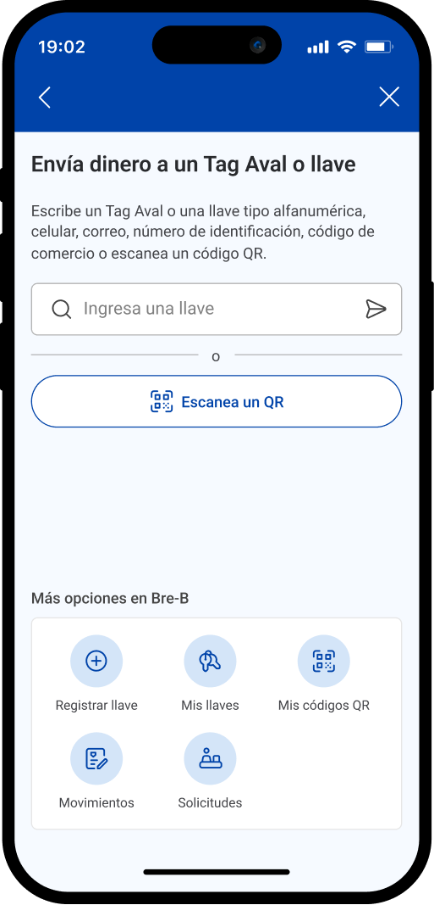
2. Primer ingreso sin llaves
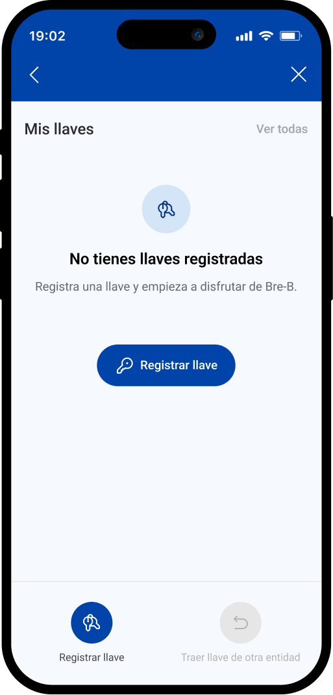
3. Explicación contextual (walkthrough)
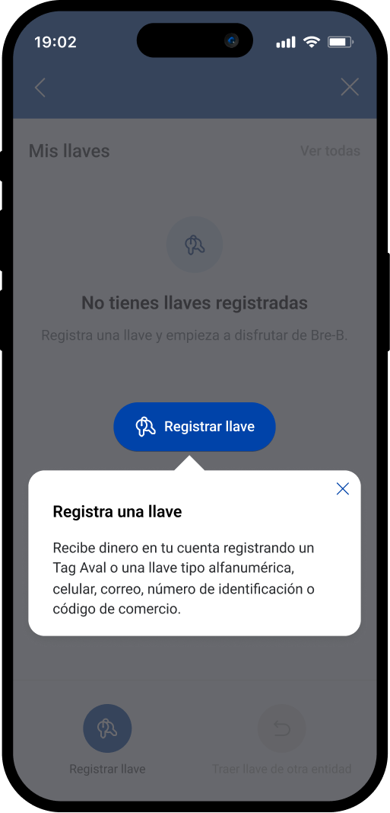
Registro y gestión de llaves
Registro, consulta y administración de llaves con acciones claras y reversibles.
1. Registro múltiple
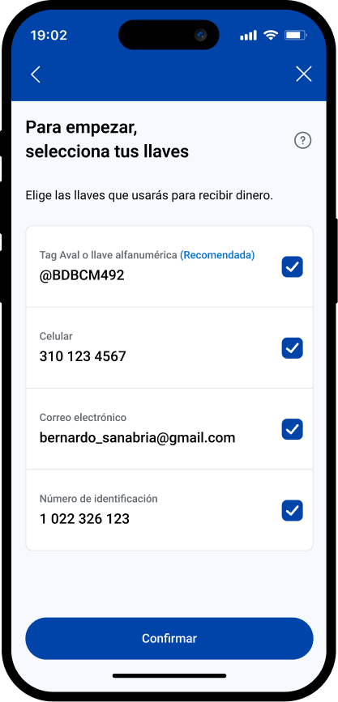
2. Registro unitario – selección de llave
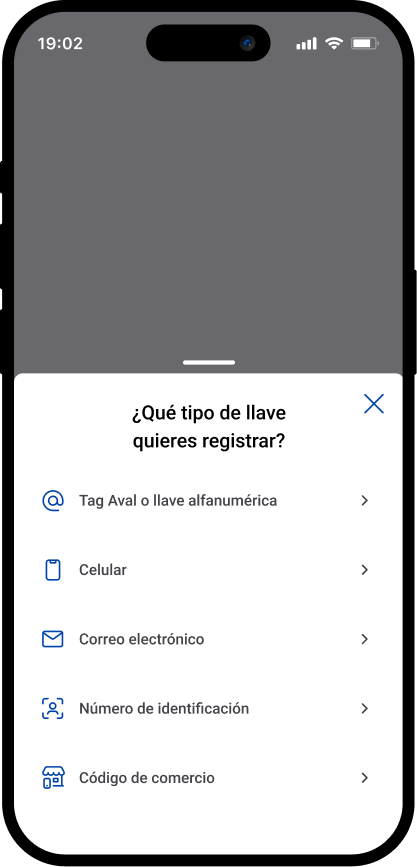
3. Registro unitario – selección de cuenta
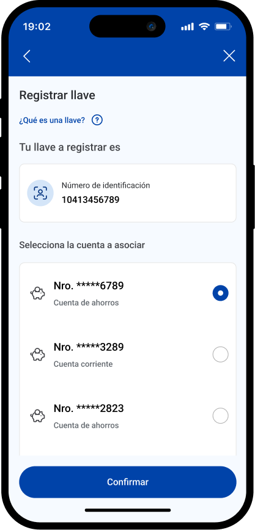
4. Confirmación de registro
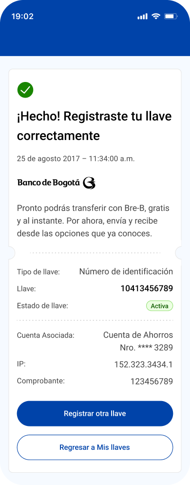
5. Consulta de llaves
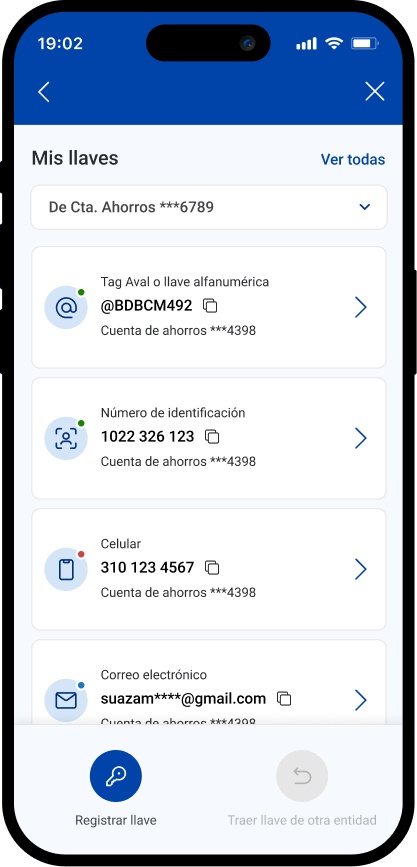
6. Gestión y cancelación
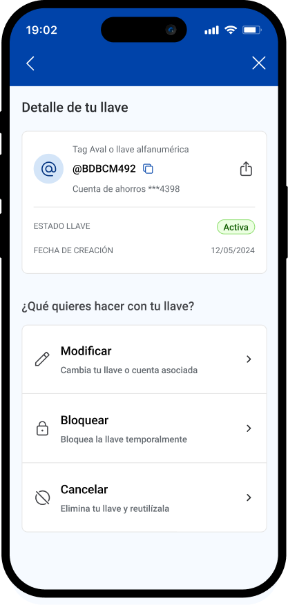
7. Prevención de errores
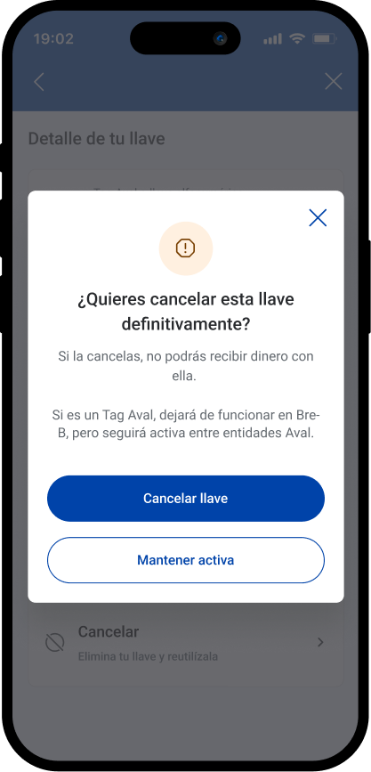
8. Notificación de cancelación
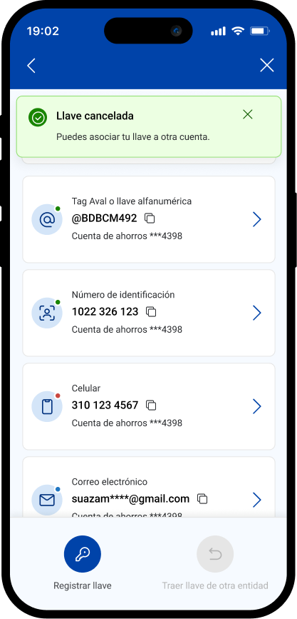
Flujo de transferencia
Transferencias inmediatas con validación clara y confirmación explícita.
1. Inicio de la transferencia
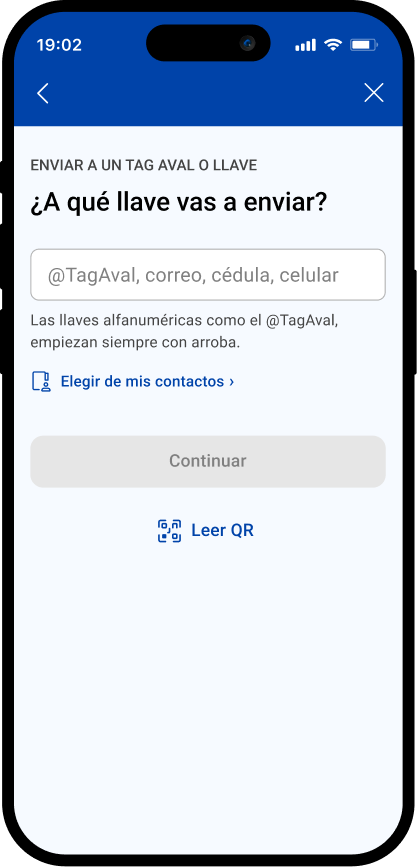
2. Ingreso de datos
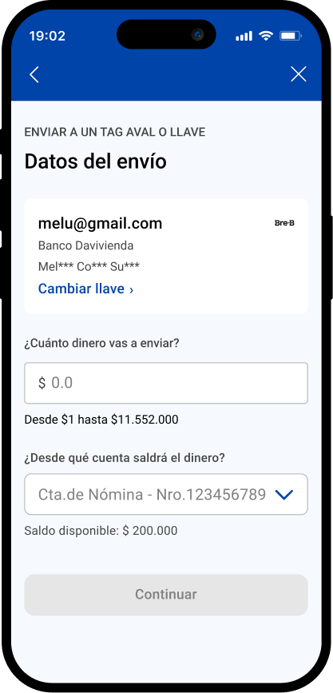
3. Validación previa al envío
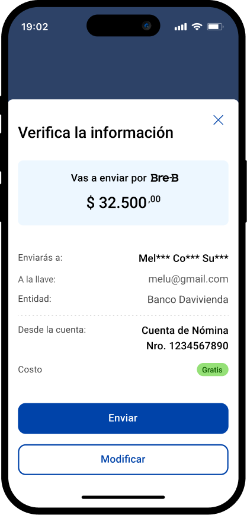
4. Confirmación y comprobante
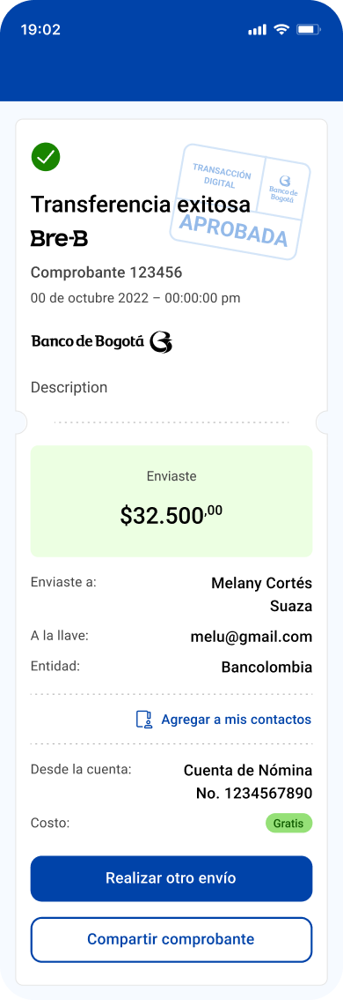
Estados y feedback del sistema
Manejo claro de errores y estados para reducir fricción y permitir la recuperación del usuario.
1. Errores críticos
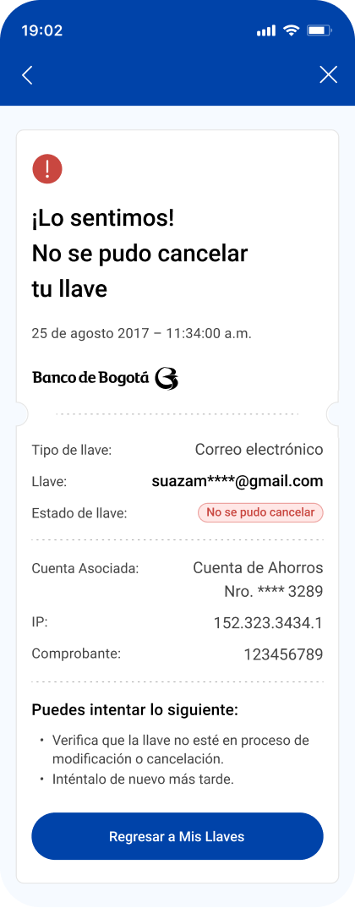
2. Errores operativos
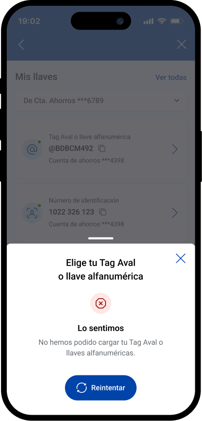
3. Prevención de errores
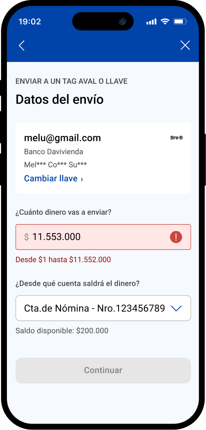
4. Feedback sin bloqueos
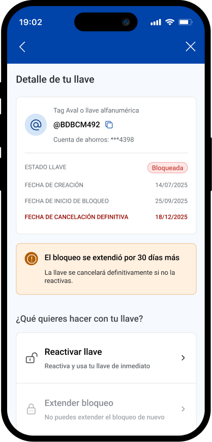
Consistencia multibanco
Sistema de variables convertido en tokens para asegurar consistencia y eficiencia entre entidades.
Banco de Occidente
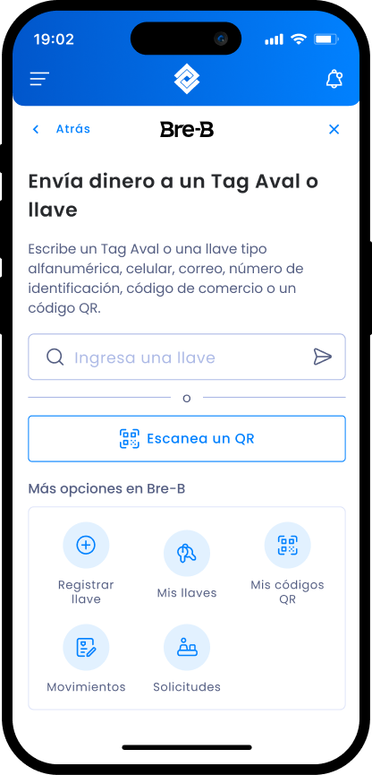
Banco Popular
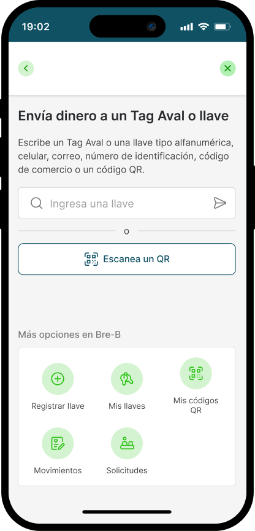
Banco AV Villas
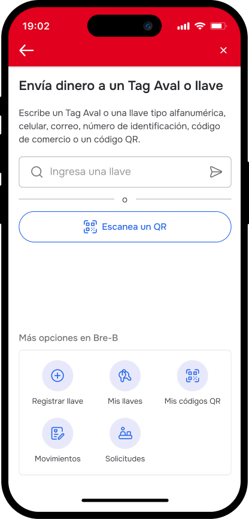
Billetera digital Dale!
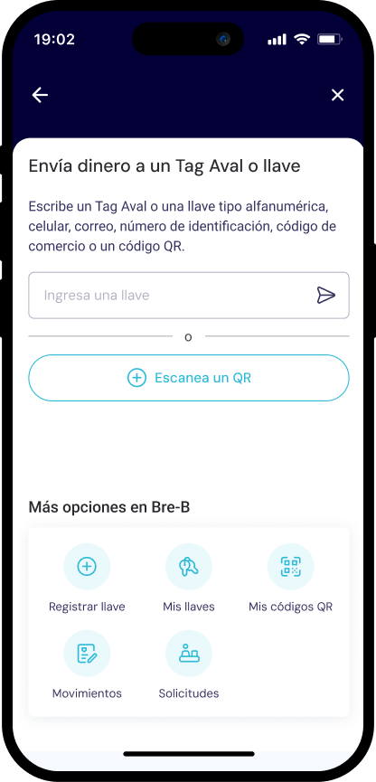